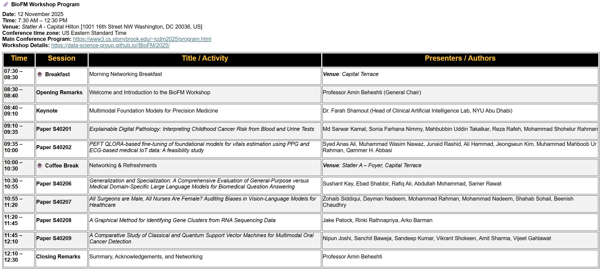

BioFM 2025
The 1st International Workshop on
Foundation Models for Biology and Bioinnovation
12-15 November, 2025
Washington DC, USA
The IEEE International Conference on Data Mining (ICDM'25)
Welcome
The rapid advancement of AI and machine learning has led to the emergence of foundation models—large-scale pre-trained models that can be adapted for various tasks. In the biological sciences, foundation models are transforming genomics, drug discovery, and personalized medicine by leveraging vast datasets and improving predictive accuracy. The BioFM 2025 workshop will explore how foundation models can drive bioinnovation, enhance biomedical research, and contribute to breakthroughs in healthcare. This workshop will serve as a platform to discuss recent advancements, challenges, and applications of foundation models in biology. We aim to bring together experts from academia, industry, and government institutions to share insights and foster collaborations that advance AI-driven bioinnovation.
We invite researchers and practitioners to submit high-quality contributions on topics including but not limited to:
Call For Papers
Theme 1: Foundation Models in Life Sciences
- Pretrained models for genomics, proteomics, single-cell, and spatial omics
- AI-driven analysis of molecular structures and interactions
- Multi-omics data integration at scale
- ProcessGPT
- Intelligent Knowledge Lakes
Theme 2: AI in Drug Discovery and Personalized Medicine
- Generative models for novel protein and small-molecule design
- Clinical trial optimisation and digital twinning
- Biomarker discovery and computational phenotypin
- Precision medicine using large-scale biological models
Theme 3: Large Language Models (LLMs) for Biology
- LLMs for literature mining and knowledge extraction
- Foundation models for diagnostic reasoning and treatment development
- Applications of large-scale pretrained models to support clinical decision-making
- Automated hypothesis generation for novel therapeutic pathways
- Automated hypothesis generation using LLMs
- Enhancing scientific discovery with natural language processing
Theme 4: Big Data in Biology
- Scalable data management for biological datasets
- AI-driven insights from high-throughput screening and sequencing
- Real-time analytics for epidemiological modelling, population genetics
- Managing large-scale biological datasets efficiently
Theme 5: Ethics, Trustworthiness, and Regulatory Challenges
- Explainability and interpretability in AI-driven biology
- Ethical considerations and regulatory challenges in AI for healthcare
- Privacy-preserving foundation models for bioinformatics and digital medicine
- Fairness and bias in AI-driven healthcare
Theme 6: Multimodal Learning and Knowledge Integration
- Integration of text, images, genomics data, and clinical records
- Knowledge graphs and AI for biomedical reasoning
- Foundation models for epidemiology and public health
Theme 7: Industry Applications of AI in Biology
- AI-driven diagnostics and decision support systems
- AI-powered laboratory automation and high-throughput screening
- Real-world case studies from biotech and pharmaceutical indus
- AI in agricultural biotechnology and food security
- We welcome original research papers, case studies, and visionary position papers that explore the role of foundation models in advancing biological sciences and healthcare.
Paper Submission Instructions
Authors are invited to submit original papers that have not been published elsewhere and are not currently under consideration for another journal, conference, or workshop. Please notice the followings:
- A paid registration is required for every accepted workshop paper, regardless of whether the author presents in person or via video.
- All accepted papers—main conference and workshops—must have at least one registered author.
- Non-archival submissions for workshops are not allowed, i.e., all accepted papers will be included and published in the proceedings.
Paper submissions should be limited to a maximum of ten (10) pages in the IEEE 2-column format (https://www.ieee.org/conferences/publishing/templates.html), including the bibliography and any appendices. Submissions longer than 10 pages will be rejected without review. All submissions will be triple-blind reviewed by the Program Committee based on technical quality, relevance to the scope of the conference, originality, significance, and clarity. The following sections provide further information for authors.
Manuscripts must be submitted electronically through the online submission system: https://wi-lab.com/cyberchair/2025/icdm25/scripts/ws_submit.php?subarea=S.
Important Dates
- Paper Submission Deadline:
29 August 2025 8 September 2025
- Paper Notification Deadline: 19 September 2025
- Early Bird Registration Deadline: September 24, 2025
- Camera-ready Deadline: Sep 25, 2025
- Workshop date Tentatively on Nov 12, 2025
Workshop Organizers
General Chairs:
Chairs:
Industry Chairs:
Workshop Program
For Authors Who are presenting online, please use the following Zoom Link:
https://macquarie.zoom.us/j/89187598632?pwd=1KIdeOHk1aNMm3Baue6jRRYr2HYFoT.1
Meeting ID: 891 8759 8632
Security/Passcode: 239164

Program Committee
Faseela Abdullakutty - Qatar University - Qatar
Iman Dehzangi - Rutgers university - USA
Nona Farbehi - UNSW Sydney - Australia
Ying Feng - University of Technology Sydney - Australia
Farshid Hajati - University of New England - Australia
Chunlei Liu - Australia Children’s Medical Research Institute - Australia
Julian Lechuga Lopez - New York University Abu Dhabi - UAE
Haohui Lu - University of Sydney - Australia
Yongpei Ma - University of Sydney - Australia
Alejandro Guerra Manzanares - University of Nottingham Ningbo - China
Mohammad Ali Moni - Charles Sturt University - Australia
Junaid Rashid - Sejong Univeristy - Korea
Morteza Saberi - University of Technology Sydney - Australia
Yanchao Tan - Fuzhou University - China
Surendrabikram Thapa - Virginia Tech - USA
Hu Wang - MBZUAI - UAE
Carl Yang - Emory University - USA
Shuchang Ye - University of Sydney - Australia
Roxana Zahedi - UNSW Sydney - Australia
Xuejiao Zhao - Nanyang Technological University - Singapore
Kaiyi Zheng - Jiangsu University - China
|